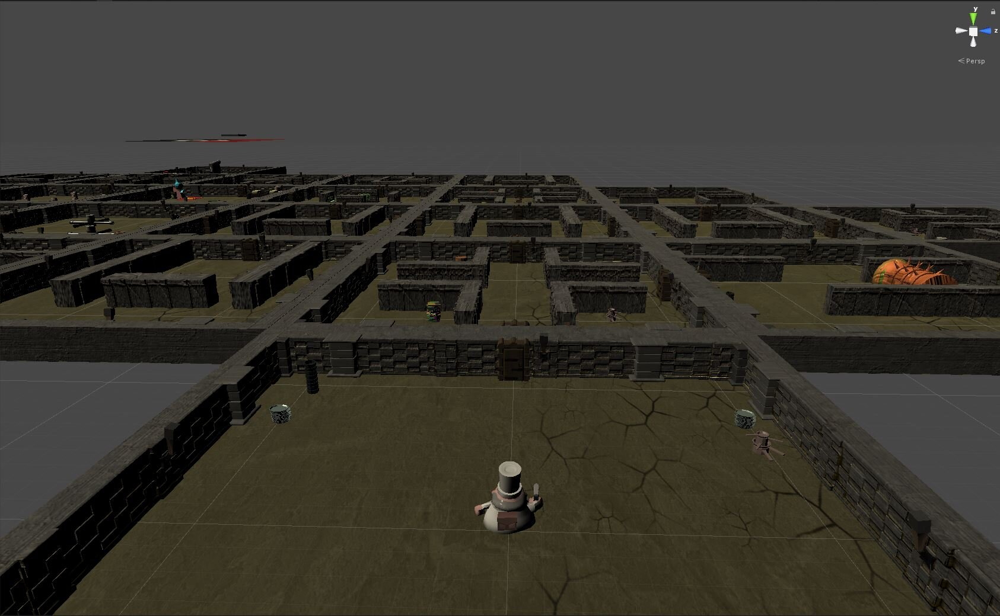
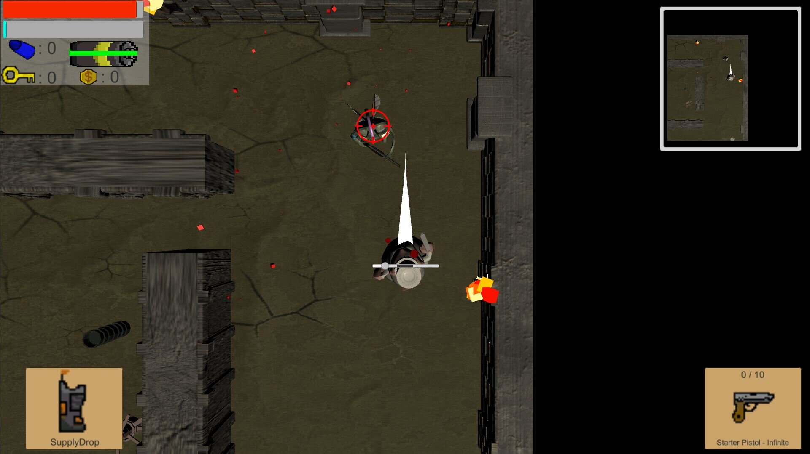
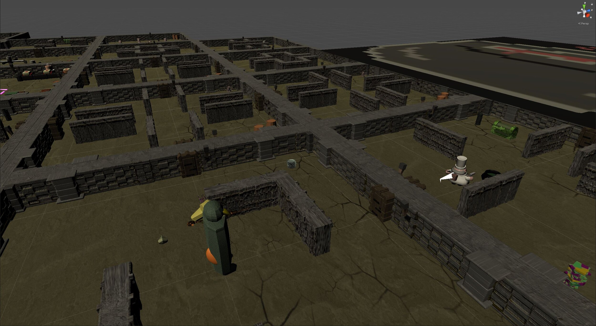
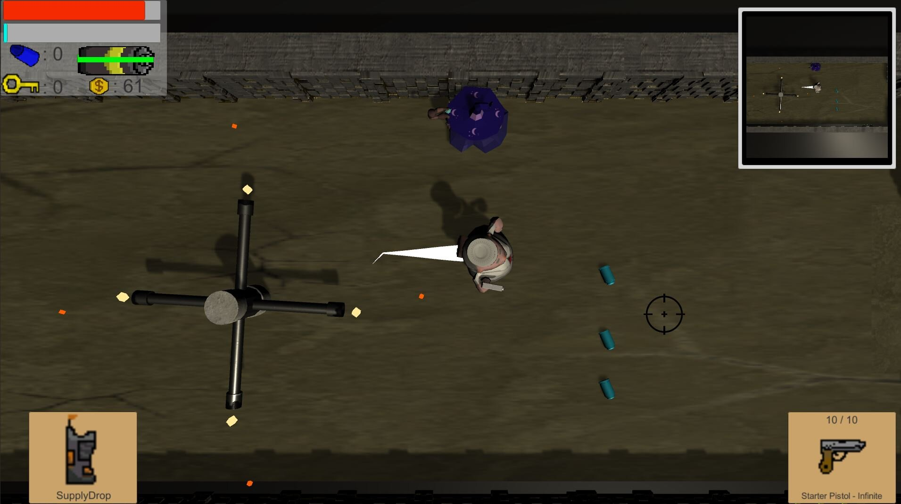

Dungeon Catering
Final Project for Full Sail University. A game based on Enter the Gungeon with our own twist.
Overview

In Dungeon Catering, you play as a chef that lies in a mysterious dungeon, in there you fight different enemies ranging from goblins to hell hounds. To beat them you use your cooking abilities and create upgrades to those weapons you find along the way. In this Top-Down shooter, rogue-like, dungeon-crawler, you must use your newly-found weapons and abilities to clear the levels and dive deeper into the dungeon to find the most rare of ingredients!
- Platform
- Windows
- Engine
- Unity3D
- Language
- C#
- Development Time
- 5 Months
- Team Size
- 8
- Role
- System Design, Level Design, Event Scripting, UI Design, QA

Features I designed and built for “Dungeon Catering”
Game & System Design

- Active Items with cooldowns
- Inventory System where the player has two inventories, one for weapons and one for cooking ingredients
- Debugging Menu
- Combat Encounters
- Checkpoint System for QA & Debugging
- Blank Mechanic (Removing all enemy bullets from the level)
- Minimap camera & movement
- Procedural Generation of each level
- Procedural path generation
- Level Pacing by enemy spawning control
- Fog of War
Scripting

- Procedural Generation of the levels
- Static GameManager
- Procedural path generation within the level
- Control of enemy spawning to pace the difficulty of the game
- Inventory System
- Game Debugging menu
- Checkpoints
- Menu Transitions
- Boss interactions
- Enemy spawning & Count within each section of the level
- Minimap camera & Movement
- Fog of War
- Saving and encoding to binary (Not implemented in the final game)
Procedural Generation
One of the biggest Challenges was procedural generation, I wanted to show how it works. Here there’s a video of several generations and how each level is generated. It starts from the center, then selects two opposite rooms to be the start and finish of the level and fills the layout with prefabricated rooms.
This is my best work so far, the thing I’m most proud of that I’ve done.